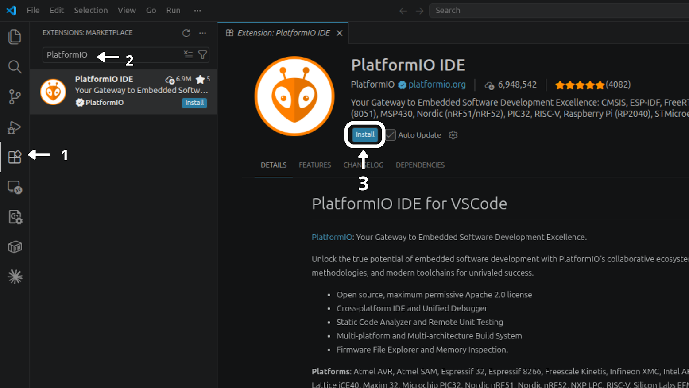
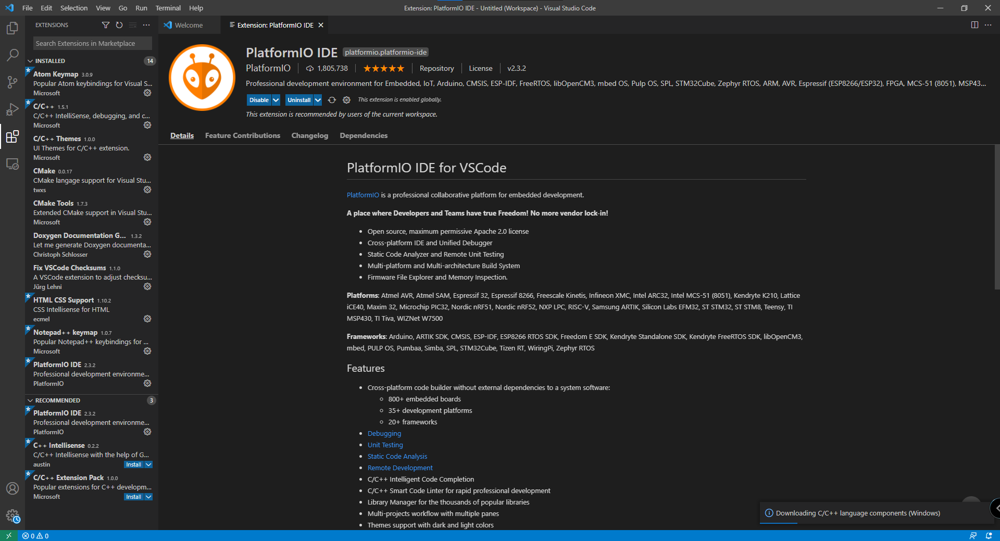

PlatformIO Support for CH55x#
PlatformIO is the recommended workflow for new CH55x projects. The
unit_ch55x_sdk repository can be used as a local PlatformIO development
platform or referenced directly from GitHub.
PlatformIO uses SDCC to build CH55x firmware and generates the
firmware.ihx, firmware.hex, and firmware.bin output files.
Repository: UNIT-Electronics-MX/unit_ch55x_sdk
Note
Docker and manual SDCC/Make workflows are optional and low priority. For new
Ubuntu and Windows setups, install PlatformIO, configure platformio.ini,
and build with pio run. macOS has not been tested in the current
validation process.
Requirements#
Git.
Python 3 on Linux for the default uploader.
WCH USB driver CH372DRV on Windows for USB bootloader uploads.
PlatformIO Core is optional and useful for terminal-based builds or CI, but the recommended installation method is the VS Code extension.
Install PlatformIO#
Install the official PlatformIO IDE extension from the VS Code Extensions view:
Open the Extensions view in Visual Studio Code.
Search for
PlatformIO.Click Install on the official PlatformIO IDE extension.
{kind=link}

Fig. 1 PlatformIO IDE extension installation steps in Visual Studio Code.#
After installation, the extension page shows PlatformIO IDE as installed and enabled in the current workspace:
{kind=link}

Fig. 2 PlatformIO IDE extension installed and enabled in Visual Studio Code.#
Ubuntu / Linux#
Install Visual Studio Code and then install the official PlatformIO IDE
extension from the VS Code Extensions view. After the extension finishes its
setup, restart VS Code and verify that the pio command is available:
pio --version
Install PyUSB in the PlatformIO Python environment if upload support needs it:
~/.platformio/penv/bin/python -m pip install pyusb
USB access may also require a udev rule:
echo 'SUBSYSTEM=="usb", ATTR{idVendor}=="4348", ATTR{idProduct}=="55e0", MODE="666"' | sudo tee /etc/udev/rules.d/99-ch55x.rules
sudo udevadm control --reload-rules
sudo udevadm trigger
macOS#
macOS has not been tested in the current SDK validation process. No macOS installation, build, or upload procedure is provided until the workflow is validated.
Windows#
Install Visual Studio Code, the official PlatformIO IDE extension, Git, and the CH372 driver. The manual SDCC, MinGW, and Make setup is not required for PlatformIO projects.
Verify PlatformIO from PowerShell:
C:\Users\<user>\.platformio\penv\Scripts\platformio.exe --version
Clone the SDK#
For local development, clone the SDK:
git clone https://github.com/UNIT-Electronics-MX/unit_ch55x_sdk.git
cd unit_ch55x_sdk
Build a PlatformIO Example#
From the Blink example inside the SDK repository, run:
cd examples/platformio-blink
pio run
The generated firmware files are placed in:
examples/platformio-blink/.pio/build/unit_ch552/
Other examples that include a platformio.ini file can be built the same
way:
cd examples/usb/usb_uart
pio run
Upload Firmware#
Put the CH55x board in bootloader mode and run:
pio run -t upload
The default upload_protocol = auto selects chprog.py on Linux and
vnproch55x on Windows. macOS upload has not been validated.
Windows Upload with vnproch55x#
Windows upload uses vnproch55x.exe from the devlabtools package. If
PlatformIO does not download the uploader automatically, install it manually in
the SDK root:
cd C:\path\to\unit_ch55x_sdk
Invoke-WebRequest "https://github.com/UNIT-Electronics/Uelectronics-CH552-Arduino-Package/releases/download/v0.0.6/ch55xduino-tools_mingw32-2026.06.21.tar.bz2" -OutFile "ch55xduino-tools_mingw32-2026.06.21.tar.bz2"
tar -xjf ch55xduino-tools_mingw32-2026.06.21.tar.bz2
Test-Path .\tools\win\vnproch55x.exe
The Test-Path command must print True. The extracted layout must
contain:
tools/win/vnproch55x.exe
tools/win/*.dll
After installing the uploader, build and upload from the PlatformIO project:
C:\Users\<user>\.platformio\penv\Scripts\platformio.exe run
C:\Users\<user>\.platformio\penv\Scripts\platformio.exe run --target upload
PlatformIO Configuration#
For a PlatformIO project inside this repository, point platform to the SDK
root:
[env:unit_ch552]
platform = ../..
board = unit_ch552
To use a released SDK version from GitHub, pin a tag in platformio.ini:
[env:unit_ch552]
platform = https://github.com/UNIT-Electronics-MX/unit_ch55x_sdk.git#v0.1.4
board = unit_ch552
Use SDK v0.1.4 or newer for the current upload flow. Older checkouts may
try to install Windows-only uploader archives as PlatformIO packages on
Linux.
To use the current SDK branch directly from GitHub:
[env:unit_ch552]
platform = https://github.com/UNIT-Electronics-MX/unit_ch55x_sdk.git
board = unit_ch552
For an existing Makefile-style example where main.c is located at the
project root, set the source directory globally:
[platformio]
src_dir = .
[env:unit_ch552]
platform = ../..
board = unit_ch552
The default configuration can usually stay minimal:
[env:unit_ch552]
platform = ../..
board = unit_ch552
; Arduino defaults to bootcfg 3 for CH552 P3.6 (D+) pull-up.
board_upload.bootcfg = 3
You can force a specific uploader when needed:
upload_protocol = chprog
upload_protocol = vnproch55x
For serial upload:
upload_protocol = vnproch55x_serial
upload_port = COM5
Supported Boards#
Board ID |
Target |
|---|---|
|
CH551 |
|
CH552 |
|
CH554 |
|
CH559 |
Common build overrides can be added to platformio.ini:
board_build.f_cpu = 24000000
build_flags =
-D PIN_LED=P34
Create a PlatformIO Project#
Create a project directory with a platformio.ini file and a source file
under src/:
my_ch55x_project/
|-- platformio.ini
`-- src/
`-- main.c
Use this minimal platformio.ini:
[env:unit_ch552]
platform = https://github.com/UNIT-Electronics-MX/unit_ch55x_sdk.git#v0.1.4
board = unit_ch552
Build the project with:
pio run
Upload the project with:
pio run -t upload